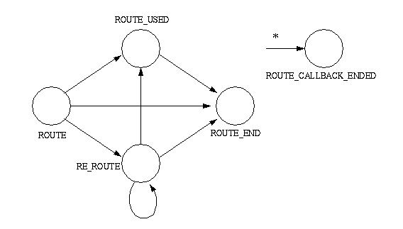

public interface RouteSession
RouteSession represents an outstanding route request of a
Call. Each session is associated with a particular RouteAddress
which represents the Address to which the Call was originally placed. This
RouteAddress is obtained via the getRouteAddress()
method defined on this interface. Applications must have previously asked to
route calls to this Address.
RouteSession may be associated with zero or more routing
callbacks, as represented by the RouteCallback interface. Using
the RouteCallback interface, applications may routing decisions
for Calls. Applications register a callback via the
RouteAddress.registerRouteCallback() method. Current callbacks
registered on a RouteAddress are associated with all new
RouteSessions created at that RouteAddress. A
RouteSession, therefore, may have more than one callback
associated with it. The first RouteCallback to respond with a
routing request for a particular RouteSession wins, in the case
multiple RouteCallbacks exist.
RouteSession has a state which represents the
current status of the Call with respect to the routing requests submitted
by the application. These states are defined as static integer constants on
this interface. Applications obtain the current state via the
RouteSession.getState() method. The various states of a route
session are summarized below.
RouteSession.ROUTE |
This state indicates that an application has been requested to route a Call. |
RouteSession.ROUTE_USED |
This state indicates that a destination has been selected for a Call. This destination is one which the application had selected during its routing of the Call. |
RouteSession.ROUTE_END |
This state indicates that the routing of a Call has terminated. |
RouteSession.RE_ROUTE |
This state indicates that an application has been requested to select another destination for the Call. |
RouteSession.ROUTE_CALLBACK_ENDED |
This state indicates that all RouteCallback objects have been
removed from this routing session. There are no more routing callbacks
associated with this session. This is the final state for the
RouteSession interface.
|
RouteSession must transition according to
the finite state diagram below. The implementation must guarantee the state
of a RouteSession adheres to these valid transitions.

RouteSession.selectRoute() method to
select possible destinations for the Call associated with this routing
session. The state of the RouteSession must either be
RouteSession.ROUTE or RouteSession.RE_ROUTE in
order for this method to be valid.
An array of destination address strings are given to this method. This list
represents a priority-order list of possible destinations for the Call. The
Call is routed to the first destination given (at index 0). If it fails, the
second destination is attempted. This process is repeated until there are no
more remaining destinations, or until a successful destination has been
chosen. If a successful destination has been chosen, the state of the
RouteSession moves into RouteSession.ROUTE_USED.
| Modifier and Type | Field and Description |
|---|---|
static int |
CAUSE_INVALID_DESTINATION
Cause code indicating that the routing session is being terminated because
because the application supplied an invalid destination in the
RouteSession.routeSelect() method. |
static int |
CAUSE_NO_ERROR
Cause code indicating no error.
|
static int |
CAUSE_PARAMETER_NOT_SUPPORTED
Cause code indicating that the routing session is being terminated because
the application supplied an unsupported parameter in the
RouteSession.routeSelect() method. |
static int |
CAUSE_ROUTING_TIMER_EXPIRED
Cause code indicating a routing timer has expired.
|
static int |
CAUSE_STATE_INCOMPATIBLE
Cause code indicating that the routing session is being terminated because
the
Connection state is incompatable with the
RouteSession. |
static int |
CAUSE_UNSPECIFIED_ERROR
Cause code indicating that the routing session is being terminated for
unspecified reasons.
|
static int |
ERROR_RESOURCE_BUSY
Error code indicating the application is too busy to handle the routing
request.
|
static int |
ERROR_RESOURCE_OUT_OF_SERVICE
Error code indicating the application or a database upon which it relies
for routing is temporary out of service and cannot handle the routing
request.
|
static int |
ERROR_UNKNOWN
Error code indicating the application is not giving a reason for ending
the routing session.
|
static int |
RE_ROUTE
The
RouteSession.RE_ROUTE state indicates that an application
has been requested to select another destination for the Call. |
static int |
ROUTE
The
RouteSession.ROUTE state indicates that an application
has been requested to route a Call. |
static int |
ROUTE_CALLBACK_ENDED
The
RouteSession.ROUTE_CALLBACK_ENDED state indicates that
all RouteCallback objects have been removed from this routing
session. |
static int |
ROUTE_END
The
RouteSession.ROUTE_END state indicates that the routing
of a Call has terminated. |
static int |
ROUTE_USED
The
RouteSession.ROUTE_USED state indicates that a
destination has been selected for a Call. |
| Modifier and Type | Method and Description |
|---|---|
void |
endRoute(int errorValue)
Ends a routing session.
|
int |
getCause()
Returns the cause indicating why this route session is in its current
state.
|
RouteAddress |
getRouteAddress()
Returns the
RouteAddress associated with this routing session
and the one for which the application has registered to route Calls for. |
int |
getState()
Returns the current state of the route session.
|
void |
selectRoute(java.lang.String[] routeSelected)
Selects one or more possible destinations for the routing of the Call.
|
static final int ROUTE
RouteSession.ROUTE state indicates that an application
has been requested to route a Call.static final int ROUTE_USED
RouteSession.ROUTE_USED state indicates that a
destination has been selected for a Call. This destination is one which
the application had selected during its routing of the Call.static final int ROUTE_END
RouteSession.ROUTE_END state indicates that the routing
of a Call has terminated.static final int RE_ROUTE
RouteSession.RE_ROUTE state indicates that an application
has been requested to select another destination for the Call.static final int ROUTE_CALLBACK_ENDED
RouteSession.ROUTE_CALLBACK_ENDED state indicates that
all RouteCallback objects have been removed from this routing
session. There are no more routing callbacks associated with this session.
This is the final state for the RouteSession interface.static final int CAUSE_NO_ERROR
static final int CAUSE_ROUTING_TIMER_EXPIRED
static final int CAUSE_PARAMETER_NOT_SUPPORTED
RouteSession.routeSelect() method.static final int CAUSE_INVALID_DESTINATION
RouteSession.routeSelect() method.static final int CAUSE_STATE_INCOMPATIBLE
Connection state is incompatable with the
RouteSession.static final int CAUSE_UNSPECIFIED_ERROR
static final int ERROR_UNKNOWN
RouteSession.endRoute() method.static final int ERROR_RESOURCE_BUSY
RouteSession.endRoute() method.static final int ERROR_RESOURCE_OUT_OF_SERVICE
RouteSession.endRoute() method.RouteAddress getRouteAddress()
RouteAddress associated with this routing session
and the one for which the application has registered to route Calls for.
TsapiPlatformException - Implementation specific exception thrown if
the route device cannot be located.void selectRoute(java.lang.String[] routeSelected)
throws MethodNotSupportedException
A RouteUsedEvent event is delivered to the application when
a successful routing destination has been selected and the Call has been
routed to that destination.
Pre-conditions:
routeSelected - A list of possible destinations for the call.MethodNotSupportedException - Routing is not supported by the
implementation.TsapiPlatformException - Implementation specific exception thrown if
the route session has already ended.void endRoute(int errorValue)
throws MethodNotSupportedException
If this method is successful, the state of this RouteSession
moves into the RouteSession.ROUTE_END state and a
RouteEndEvent is delivered.
Pre-Conditions
Post-Conditions
errorValue - Indicates the reason why the application is terminating
this routing session, as defined by the constants in this interface.MethodNotSupportedException - The implementation does not
support this method.int getState()
int getCause()
Copyright © 2009 Avaya All Rights Reserved.